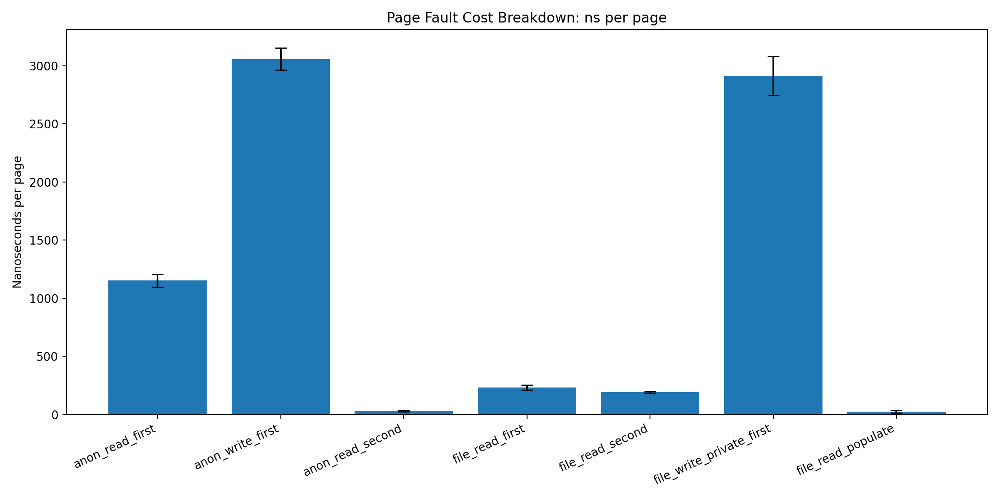
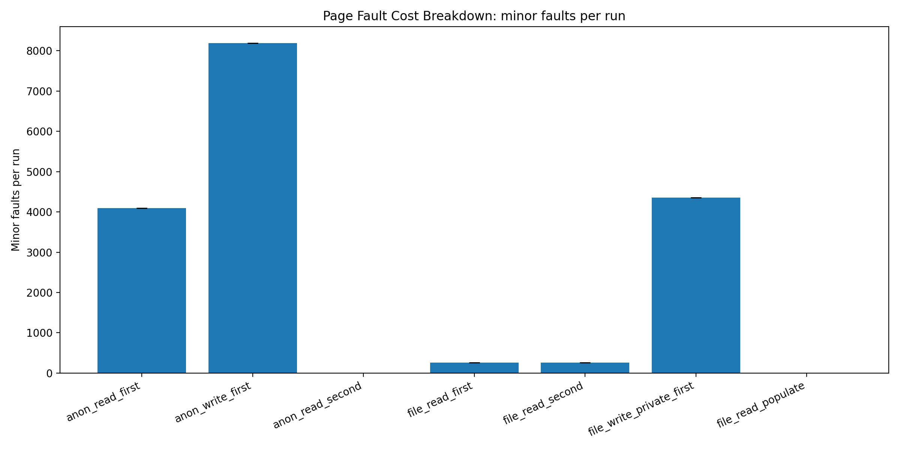
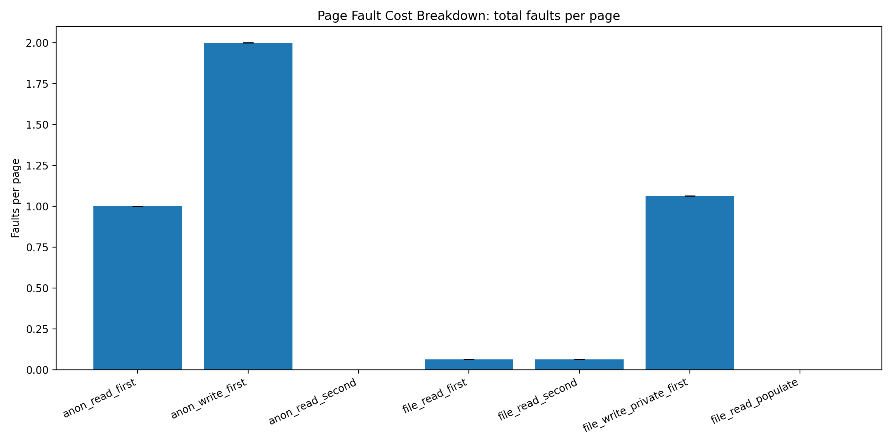
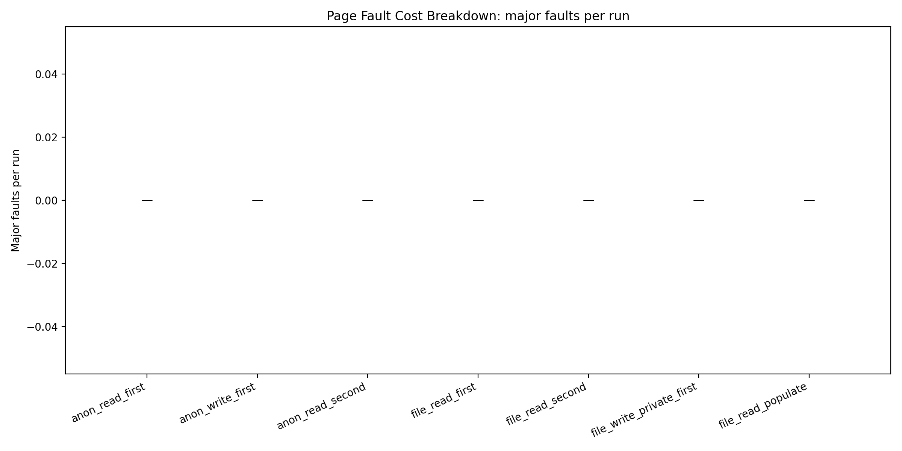

Page Fault Cost Breakdown — Not All Faults Are Equal¶
“A page fault costs ~1000ns.”
This is misleading.
This experiment shows a simple but important truth:
There is no single “page fault cost.”
Experimental Setup¶
- 4096 pages (16MB total)
- Page size: 4KB
- Sequential access pattern
- CPU pinned
- Multiple runs with warmup
Tested modes:
- Anonymous memory (read / write)
- File-backed mmap
- Copy-on-write (MAP_PRIVATE)
- MAP_POPULATE
Result 1 — Latency (ns per page)¶

Summary¶
anon_write_first ≈ 3000 ns
file_write_private ≈ 2900 ns
anon_read_first ≈ 1100 ns
file_read_first ≈ 230 ns
file_read_second ≈ 190 ns
anon_read_second ≈ 30 ns
file_read_populate ≈ 20 ns
Insight #1 — Write Faults Are Real Work¶
read ≈ 1100 ns
write ≈ 3000 ns
Why is write ~3× slower?
Because it performs real work:
- Physical page allocation
- Zero initialization
- Page table updates
In contrast, read faults often map a shared zero page.
Read fault = lazy mapping
Write fault = real allocation
Result 2 — Minor Faults¶

anon_read_first ≈ 4096
anon_write_first ≈ 8192
file_read_first ≈ 256
Insight #2 — The OS Reduces Faults (Readahead)¶
4096 pages → ~256 faults
This implies ~16 pages per fault.
Linux detects sequential access and performs readahead, fetching multiple pages at once.
File-backed memory can generate fewer faults than anonymous memory
Result 3 — Faults per Page¶

anon_read ≈ 1
anon_write ≈ 2
file_read ≈ 0.06
file_write ≈ 1.06
Insight #3 — Writes Trigger Multiple Faults¶
anon_write = read fault + write fault
Which explains:
8192 faults = 2 × 4096
Result 4 — Major Faults¶

majflt = 0
Insight #4 — Page Fault ≠ Disk I/O¶
This is a critical point.
❌ Page fault = disk access
✔ Page fault = often a memory event
In this experiment:
- Page cache was already warm
- No disk I/O occurred
Insight #5 — Warm vs Cold Memory¶
cold access ≈ 1000ns+
warm access ≈ 30ns
After the first access:
- No more page faults
- Only memory access remains
💡 Page faults are one-time initialization costs
🔥 Insight #6 — Copy-on-Write Is Just Allocation¶
file_write_private ≈ anon_write_first
Why?
- The file is not modified
- A new anonymous page is allocated
- Original data is copied
COW = hidden allocation
Insight #7 — MAP_POPULATE Does Not Remove Cost¶
file_read_populate ≈ 20ns
This looks like “free” access, but it’s not.
- Without MAP_POPULATE → cost happens on access
- With MAP_POPULATE → cost happens during mmap()
Cost is shifted, not removed
Summary¶
Page faults fall into distinct categories:
| Type | Behavior | Cost |
|---|---|---|
| Zero-page fault | Lazy mapping | Low |
| Allocation fault | Memory allocation + zero | High |
| File-backed fault | Readahead | Medium |
| Copy-on-write | Copy + allocate | High |
Limitations¶
- No major faults (no disk I/O)
- Sequential access triggers readahead
- Results depend on page cache state and system load
Future Work¶
- Stride access to disable readahead
madvise()experiments (RANDOM vs SEQUENTIAL)- Force major faults (large datasets)
- Compare tmpfs vs disk-backed storage
Final Takeaway¶
Page faults are not a single cost.
They are a combination of:
- Lazy mappings
- Memory allocation
- OS prefetching
- Copy-on-write behavior
Understanding these differences is essential for:
- Systems performance engineering
- Memory optimization
- Low-level system design
Closing Thought¶
If you ever hear:
“A page fault costs ~1000ns”
Just remember:
It depends.